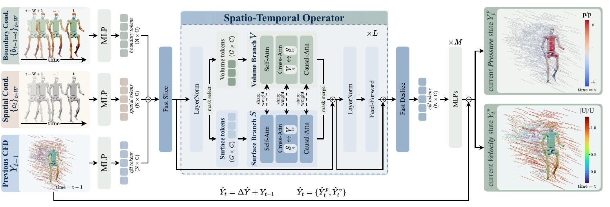
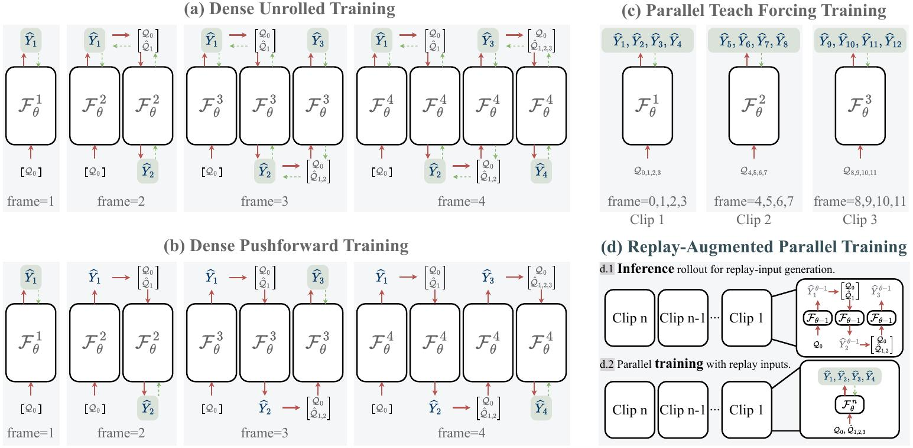
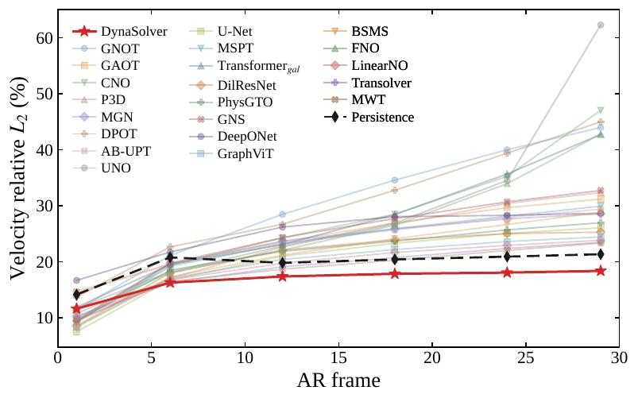
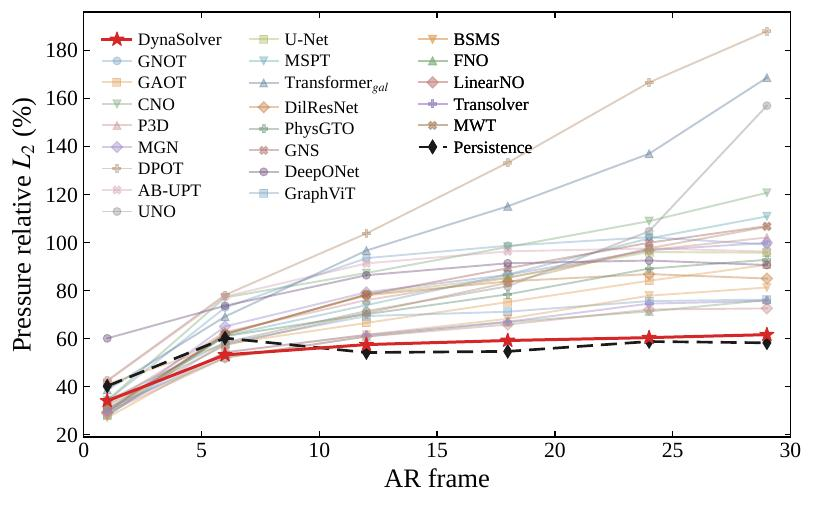
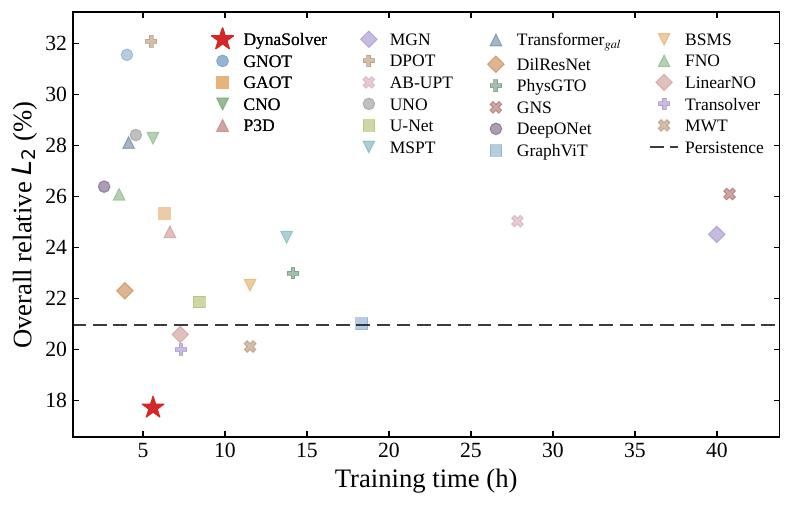

Abstract
Neural operators provide efficient surrogates for computational fluid dynamics (CFD), but most are designed for static geometries and are not equipped to model unsteady flows induced by continuously moving boundaries. We study dynamic-boundary 4D CFD prediction for articulated moving geometries and introduce RoboCFD-4D, a temporally resolved robotic CFD benchmark spanning diverse morphologies and flow conditions. To address the computational and autoregressive challenges of this setting, we propose DynaSolver, a neural operator that explicitly conditions on boundary evolution and causal flow history. DynaSolver employs an efficient physical-token formulation that amortizes point-to-token projection across the operator stack, substantially reducing repeated point-space spatiotemporal computation while retaining accurate point-level reconstruction. We further introduce Replay-Augmented Parallel Training, which exposes the model to autoregressively generated histories while preserving parallel dense supervision, narrowing the gap between ground-truth-conditioned training and autoregressive rollout. Experiments on RoboCFD-4D show that DynaSolver achieves the best full-rollout accuracy among a broad range of learned CFD surrogates, with its advantage increasing as rollout proceeds, indicating substantially reduced autoregressive error accumulation.
Method
Efficient token-space pipeline
Temporal 4D CFD is expensive if every operator layer still slices thousands of surface and volume points. DynaSolver amortizes that cost: point features are sliced once into compact physical tokens, all self-, cross-, and causal attention run in token space, and a single deslice plus a light MLP decoder reconstructs the residual field. For a window of length W and depth L, point–token projection is O(W) rather than O(LW), so temporal reasoning stays accurate without repeating the heavy point-space work.

Figure 1. Full DynaSolver pipeline. Fast Slice/Deslice brackets the operator stack so efficiency and point-level reconstruction are handled separately.
Replay-Augmented Parallel Training
Unrolled training sees the model’s own errors but is slow; parallel teacher-forcing is fast but only sees ground-truth history. Replay-Augmented Parallel Training keeps both: a frozen previous-epoch model rolls out replay histories (no gradients), then the student predicts every transition in one block-causal pass with ground-truth targets. Mixing replay and clean clips exposes realistic rollout noise while the student stays densely supervised and cheap to train.

Figure 2. (a–b) sequential unroll / pushforward; (c) parallel teacher-forcing; (d) our replay-augmented parallel training.
Experiments
Quantitative comparison
On RoboCFD-4D Base we report relative L2 (%) of velocity and pressure at selected rollout steps, plus full-rollout averages. Persistence is a no-learning baseline and is excluded from ranking. DynaSolver is not the strongest at the first step, but it is best from mid-horizon onward, so the full-rollout overall error is lowest.
| Method | Per-frame Velocity ↓ | Per-frame Pressure ↓ | Avg. Vel. ↓ | Avg. Pre. ↓ | Overall ↓ | ||||||||||
|---|---|---|---|---|---|---|---|---|---|---|---|---|---|---|---|
| 1 | 6 | 12 | 18 | 24 | 29 | 1 | 6 | 12 | 18 | 24 | 29 | ||||
| GNOT | 11.38 | 21.14 | 28.47 | 34.58 | 40.01 | 43.99 | 34.08 | 72.89 | 93.49 | 98.66 | 102.21 | 99.18 | 30.56 | 87.84 | 31.55 |
| GAOT | 14.46 | 19.54 | 23.58 | 26.93 | 29.66 | 31.19 | 40.96 | 57.70 | 66.52 | 75.18 | 84.08 | 90.67 | 24.60 | 70.25 | 25.32 |
| CNO | 9.32 | 19.36 | 24.27 | 28.49 | 35.25 | 47.04 | 34.24 | 77.09 | 87.29 | 98.14 | 108.89 | 120.71 | 27.12 | 91.52 | 28.28 |
| P3D | 9.32 | 17.07 | 22.62 | 26.70 | 30.44 | 32.36 | 32.55 | 62.66 | 76.03 | 85.25 | 96.86 | 102.08 | 23.72 | 78.82 | 24.61 |
| MGN | 9.49 | 19.70 | 23.69 | 25.88 | 27.66 | 28.55 | 29.32 | 65.02 | 79.25 | 86.55 | 96.78 | 99.86 | 23.48 | 79.44 | 24.51 |
| DPOT | 13.66 | 22.65 | 26.70 | 32.77 | 39.39 | 44.98 | 42.45 | 78.12 | 103.77 | 133.25 | 166.67 | 187.97 | 30.30 | 121.10 | 32.08 |
| AB-UPT | 14.75 | 19.60 | 23.36 | 25.68 | 27.92 | 29.38 | 42.29 | 77.47 | 91.30 | 96.30 | 97.54 | 96.23 | 23.83 | 86.84 | 25.03 |
| UNO | 11.71 | 18.17 | 22.82 | 26.91 | 34.53 | 62.31 | 34.13 | 58.36 | 71.43 | 81.76 | 104.69 | 156.99 | 27.32 | 81.55 | 28.40 |
| U-Net | 7.48 | 16.73 | 20.99 | 23.30 | 25.05 | 26.08 | 27.90 | 61.64 | 78.41 | 85.41 | 96.04 | 95.75 | 20.81 | 77.99 | 21.86 |
| MSPT | 9.28 | 19.15 | 23.18 | 25.89 | 28.14 | 29.94 | 27.70 | 61.18 | 73.90 | 86.65 | 101.71 | 110.88 | 23.42 | 79.14 | 24.39 |
| Transformergalerkin | 11.89 | 19.49 | 23.07 | 28.43 | 35.67 | 42.74 | 38.61 | 69.13 | 96.66 | 115.08 | 136.97 | 168.67 | 26.86 | 104.64 | 28.11 |
| DilResNet | 8.55 | 17.99 | 22.08 | 23.90 | 25.04 | 25.30 | 29.00 | 61.87 | 78.00 | 83.80 | 86.84 | 84.99 | 21.44 | 74.56 | 22.30 |
| PhysGTO | 9.41 | 18.51 | 21.85 | 23.68 | 25.69 | 26.97 | 30.52 | 60.97 | 70.12 | 78.40 | 89.10 | 92.79 | 21.81 | 72.96 | 22.99 |
| GNS | 9.67 | 19.74 | 24.31 | 27.72 | 30.70 | 32.74 | 29.69 | 61.92 | 78.24 | 89.28 | 99.89 | 106.83 | 24.97 | 80.91 | 26.09 |
| DeepONet | 16.68 | 21.74 | 26.20 | 28.05 | 28.29 | 28.67 | 60.07 | 73.64 | 86.37 | 91.34 | 92.49 | 90.63 | 25.51 | 84.65 | 26.38 |
| GraphViT | 8.33 | 17.05 | 20.41 | 22.18 | 23.61 | 24.44 | 28.28 | 57.98 | 69.36 | 71.16 | 75.61 | 76.20 | 20.15 | 66.05 | 21.00 |
| BSMS | 8.44 | 17.30 | 21.20 | 24.12 | 26.66 | 28.85 | 27.01 | 54.20 | 61.57 | 68.21 | 77.84 | 81.24 | 21.78 | 63.92 | 22.51 |
| FNO | 10.70 | 18.04 | 22.07 | 26.54 | 33.95 | 42.81 | 31.13 | 52.02 | 60.85 | 66.83 | 71.30 | 76.06 | 25.49 | 61.69 | 26.08 |
| LinearNO | 10.26 | 16.81 | 19.74 | 21.66 | 22.92 | 23.84 | 29.14 | 52.05 | 60.81 | 65.82 | 72.07 | 72.55 | 19.82 | 61.00 | 20.58 |
| Transolver | 10.19 | 16.24 | 19.10 | 20.73 | 22.38 | 23.45 | 29.77 | 54.27 | 61.51 | 66.99 | 74.53 | 75.64 | 19.23 | 62.76 | 19.99 |
| MWT | 9.55 | 16.50 | 18.67 | 20.26 | 22.03 | 23.35 | 32.05 | 57.19 | 70.58 | 83.28 | 97.58 | 106.52 | 18.97 | 76.64 | 20.11 |
| Persistence | 14.14 | 20.78 | 19.80 | 20.42 | 20.92 | 21.35 | 40.17 | 60.19 | 54.16 | 54.63 | 58.75 | 58.21 | 20.14 | 56.09 | 20.95 |
| DynaSolver (Ours) | 11.61 | 16.27 | 17.37 | 17.86 | 18.06 | 18.36 | 34.02 | 53.19 | 57.48 | 59.17 | 60.37 | 61.61 | 17.07 | 56.35 | 17.71 |
Table 1. Quantitative comparison across rollout horizons on RoboCFD-4D Base. Best in green; second-best underlined. Persistence is not ranked.
Rollout error trends
The same Base evaluation as curves: overall, velocity, and pressure relative L2 over the full autoregressive horizon. DynaSolver’s gap widens as rollout proceeds, especially for velocity, matching the late-horizon numbers in Table 1 (18.36% velocity and 61.61% pressure at step 29).


Figure 3. Rollout error evolution on RoboCFD-4D Base.
Accuracy versus training cost

DynaSolver has the lowest overall rollout error (17.71%, 11.4% below the next-best 19.99%) while staying among the cheapest learned methods to train. Token-space operators skip repeated point-space work; Replay-Augmented Parallel Training keeps dense parallel updates instead of sequential unrolling.
Qualitative comparison
Looping error maps of DynaSolver, ABUPT, and PhysGTO against the WaterLily reference. Click a panel to pause, same as the clips below.
RoboCFD-4D clips
Twenty robots, two wind conditions each. Click a clip to pause. Each loop is muted and 50 frames.
Citation
@article{qian2026dynasolver,
title = {DynaSolver: A Neural Operator for Autoregressive 4D Flow Prediction with Dynamic Boundaries},
author = {Qian, Rui and Dai, Shibo and Lin, Mengjun and Hou, Yuk-Kit and Zhang, Saining and Chen, Junhao and Zhao, Hao and Li, Chaojian},
journal = {arXiv preprint},
year = {2026}
}